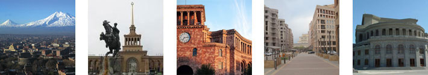

The Republic of Armenia is a sovereign, democratic, social and legal state. The state power is administered pursuant to the Constitution and the laws based on the principle of separation of the legislative, executive and judicial powers.

Official Name
Republic of Armenia - Hayastani Hanrapetoutyun
Official languages
Republic of Armenia - Hayastani Hanrapetoutyun
Religion
The absolute majority is the follower of the Armenian Apostolic Church.
Currency Unit
The currency unit of the RA is dram (AMD), introduced in 1993.
Population 3 249 500 (2010)
Ethnic composition
Armenians` 96%
Minorities: Russians, Yezidis, Assyrians, Greeks, Ukrainians, Jews, Kurds and others.
Natural Resources: Armenia is rich in copper, coal, iron, bauxite, molybdenum, gold, silver, lead and zinc. Substantial deposits of pumice, marble, tufa, perlite, limestone, basalt and salt exist. Precious and semi-precious stones are also abundant.
Territory: 29.74 thousand square kilometers.
Average Altitude Above Sea Level: 1,800 meters
Highest Mountain Peak: Aragats (4 095 meters)
Neighbouring Countries:
in the North - Georgia
in the North-East - Azerbaijan
in the South - Iran
in the South-West - Azerbaijan
in the West - Turkey